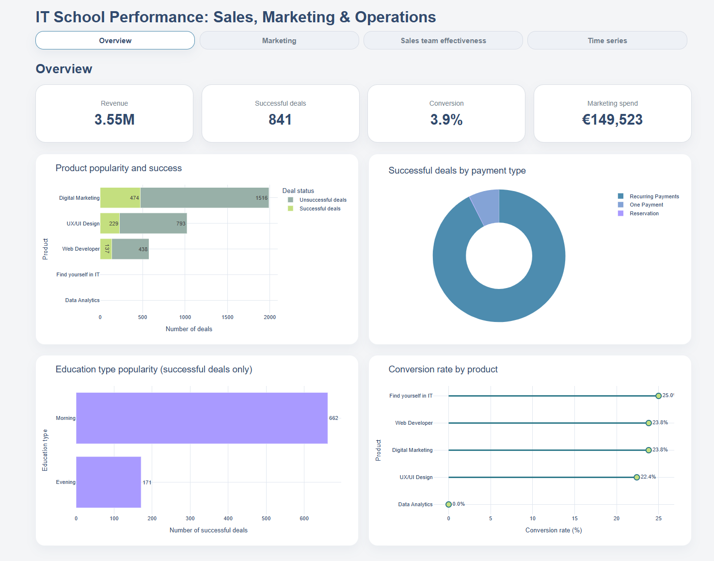
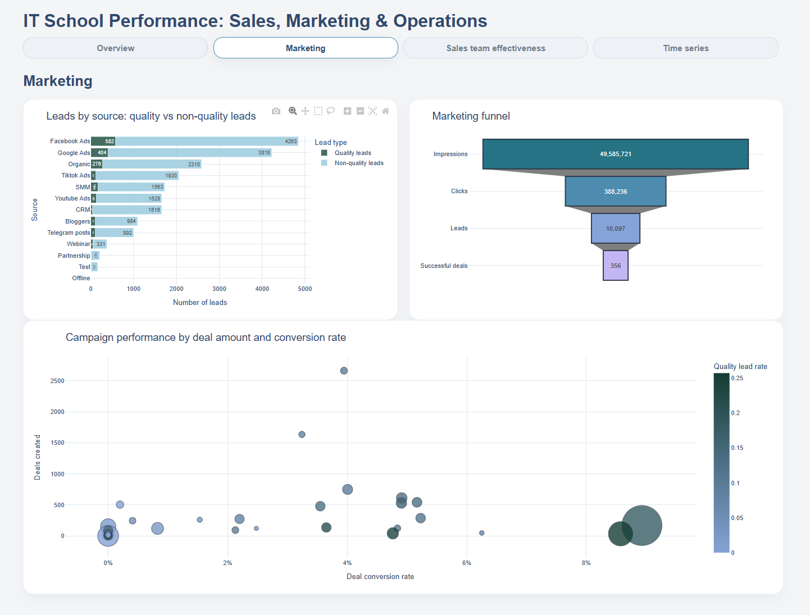
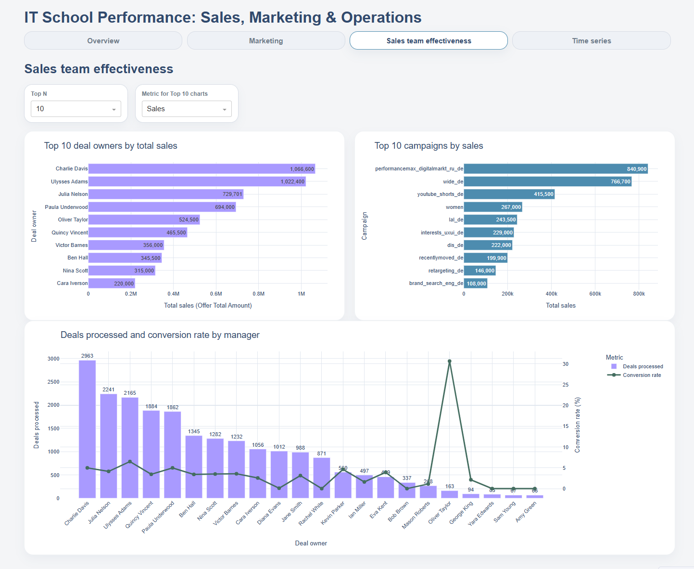

CRM Sales and Lead Analysis
This project aimed to analyze sales performance and sales structure, identify trends and seasonality in deal activity, evaluate the effectiveness and lead quality of marketing channels and campaigns, and examine the impact of sales managers, payment methods, product categories, and training formats on key business metrics.
Project workflow
- Cleaned four original datasets using pandas
- Standardized missing values, categories, and dates
- Analyzed campaigns, sources, calls, and deals
- Created an interactive dashboard with Dash and Plotly
Overview tab
The tab provides key performance indicators.

Marketing performance analysis
This section highlights the effectiveness of campaigns and marketing sources.

Sales team effectiveness
Sales team performance was evaluated using sales value, conversion rates, deal volumes, and lead distribution.

Key findings
- Facebook Ads generated the highest volume of leads, making it the strongest acquisition channel in terms of lead volume.
- The analysis revealed substantial attrition at two critical stages of the sales funnel: awareness generation and lead-to-customer conversion.
- The greatest opportunity for growth lies not in increasing marketing reach, but in improving the conversion rate from lead acquisition to completed payment.